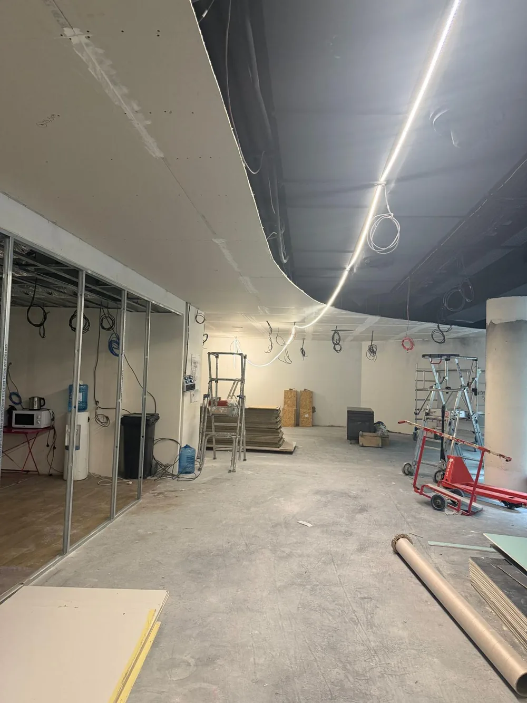
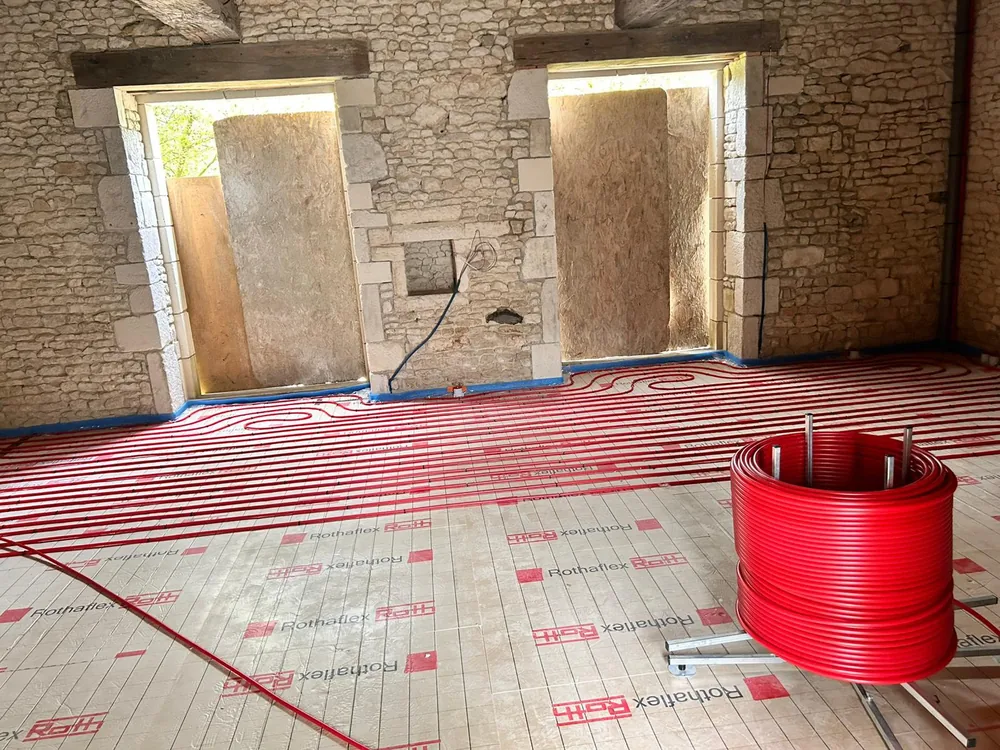
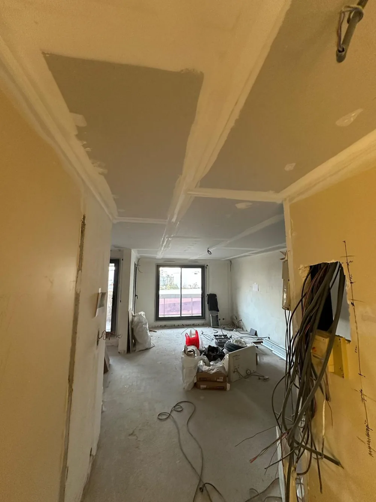

Ce que nous réalisons
au Mans
Autour du Mans, nous accompagnons particuliers et professionnels pour leurs projets de rénovation, de l'étude à la livraison, sans sous-traitance.

Du ragréage à la pose finale, carrelage, parquet, vinyle, béton ciré. Nous assurons aussi la pose de plinthes, seuils et transitions entre pièces pour un rendu soigné. Un relevé du support est systématiquement effectué pour garantir la planéité et la durabilité de la pose.

Application en sous-couche et finitions sur murs, plafonds et façades. Peintures microporeuses en extérieur, finitions lavables en intérieur, rendu impeccable garanti. Nous vous accompagnons dans le choix des teintes et des finitions selon l'orientation et la luminosité de chaque pièce.

Démolitions partielles, création de baies, enduits projetés ou lissés, dalles, chainages et ravalement. Chaque intervention suit les DTU en vigueur pour une exécution solide et durable. Nos équipes se déplacent avec le matériel adapté et établissent un relevé précis avant tout démarrage.

Isolation des murs par l'intérieur, placo, ratissage fin, faux-plafonds et enduits décoratifs. Toutes nos finitions sont prêtes à peindre ou à carreler, bandes et joints compris. L'ensemble des réservations pour l'électricité et la plomberie sont anticipées afin de livrer un chantier coordonné.

Salle de bain clé en main, remplacement de chaudière, pompe à chaleur, plancher chauffant. Nous intervenons sur tous types d'installations avec un devis précis par poste. À la livraison, chaque installation est testée en pression et vérifiée avant remise des clés.

Tableaux électriques, circuits dédiés, prises 2P+T et USB, éclairages sur rail et domotique. Travaux réalisés dans les règles de l'art, avec attestation de conformité si nécessaire. À l'issue des travaux, un certificat de conformité est établi pour toute mise aux normes ou création de tableau.